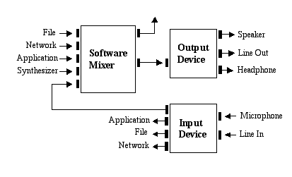
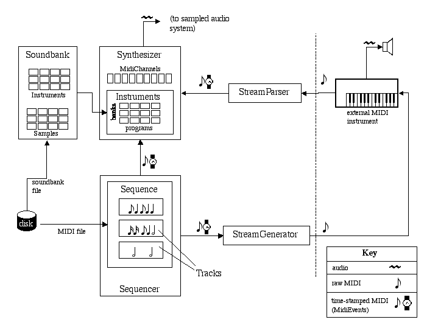
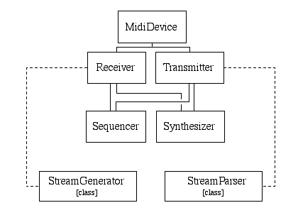

사운드 아키텍쳐(architecture)의 개요
설계 목표
Java Sound API 는, 음성 미디어의 입출력에의 효과와 제어를 위한 저레벨 API 입니다. 이 API 를 사용하면(자), 확장성 및 유연성을 향상시키는 시스템로, 오디오 입출력에 일반적으로 필요한 기능에 대한 명시적인 제어를 제공합니다.
사운드는 가장 기본적인 요소이기 (위해)때문에, Java Sound 는 폭넓은 사용자의 요구에 대응하고 있습니다. Java Sound API 는, 예를 들어 다음과 같은 영역의 어플리케이션에 적용됩니다.
- 통신 시스템 (회의, 전화 등)
- 최종 사용자 컨텐츠의 배포 시스템 (미디어 플레이어나 음악을 스트리밍 한 컨텐츠를 사용해 배포)
- 대화형 응용 프로그램 (동적인 컨텐츠를 사용한 게임이나 Web 사이트 등)
- 컨텐츠의 작성 및 편집
- 툴, 툴 킷, 및 유틸리티프로그램
Java Sound 를 사용하면(자), 전문화된 기능에 의해 어플리케이션의 오디오 지원를 확장해, 보다 고레벨의 인터페이스 및 다른 종류의 미디어와의 통합성을 제공하는 아키텍쳐(architecture)를 어플리케이션에 통합할 수가 있습니다.
Java Sound 는, Java 플랫폼상에서의 가장 낮은 레벨의 오디오 지원를 제공합니다. 이것에 의해, 오디오 고유의 기능을 고도로 제어할 수 있습니다. 예를 들어, 디지털 오디오나 MIDI (Musical Instrument Digital Interface) 디바이스등의 system resource의 인스톨, 액세스, 및 조작을 행하기 위한 기구가 제공됩니다. Java Sound 에 고성능의 사운드 에디터나 GUI 툴이 포함되어 있는 것이 아니라, Java Sound 는 그러한 어플리케이션의 구축을 가능하게 하는 기능세트를 제공하고 있습니다. Java Sound 는, 최종 사용자가 일반적으로 필요로 하는 것보다도 한층 더 저레벨의 제어에 중점을 두고 있습니다. 최종 사용자는, Java Sound 를 기본으로 구축된 고레벨의 인터페이스를 이용할 수 있습니다.
주: 이 문서에서는, 「어플리케이션」이라고 하는 용어는, 일반적으로 Java 애플릿과 Java 어플리케이션을 가리킵니다.
패키지
Java Sound API 에는, 디지털 오디오와 MIDI 데이터의 양쪽 모두를 지원하는 기능이 포함되어 있습니다. 이러한 주된 2 개의 기능의 모듈은, 다른 패키지로 제공됩니다.
javax.media.sound.sampled
이 패키지는, 디지털 (샘플링) 오디오의 capther-, 믹싱, 및 재생을 위한 인터페이스를 지정합니다.
javax.sound.midi
이 패키지에서는, MIDI 합성, 시켄싱, 및 이벤트 전송을 위한 인터페이스를 제공하고 있습니다.
이 밖에, 다음의 2 개의 패키지에 의해, 서비스 프로바이더 (어플리케이션 개발자와 대립하는 입장)가, 시스템상에 인스톨 할 수 있는 커스텀 컴퍼넌트를 작성할 수 있게 됩니다.
javax.sound.sampled.spi
javax.sound.midi.spi
이 문서의 다음의 마디로,javax.sound.sampled API 의 개요 등, 샘플링 오디오 시스템에 대해 설명합니다. 마지막 마디로, MIDI 시스템 및 javax.sound.midi API 에 대해 설명합니다.
샘플링 오디오
javax.sound.sampled 패키지는, 디지털 오디오 데이터를 처리합니다. 디지털 오디오 데이터는, 샘플링 오디오라고도 불립니다. ( 「샘플」이란, 신호가 연속하는 snapshot입니다. 디지털 오디오의 경우는 음파입니다. 예를 들어, 콤팩트 디스크에 보존하기 위해서 녹음되는 오디오는, 1 초간에 44,100 회 샘플링 됩니다. 일반적으로, 샘플링 오디오는 사운드의 녹음에 의해 작성됩니다만, 사운드를 합성해 생성할 수도 있습니다. 「샘플링 오디오」라고 하는 용어는, 데이터의 종류를 나타내, 데이터의 출처(소)를 나타내는 것이 아닙니다. 샘플링 오디오는, 사운드 자체라고 생각할 수가 있습니다만, MIDI 데이터는, 음악 사운드를 작성하기 위한 레시피이다고 생각할 수가 있습니다. )
Java Sound 는, 특정의 오디오 하드웨어 구성을 상정하고 있습니다. 시스템상에 다양한 종류의 오디오 컴퍼넌트를 인스톨 할 수 있도록(듯이) 설계되고 있어 그것들에는 API 를 사용해 액세스 할 수 있습니다. Java Sound 는, 사운드 카드에 대한 입출력 (사운드 파일의 녹음이나 재생 등), 오디오의 복수의 스트림의 믹싱 등, 일반적인 기능을 지원하고 있습니다. Java Sound 를 이용할 수 있는 일반적인 오디오 아키텍쳐(architecture)의 예를 다음에 나타냅니다.
일반적인 오디오 아키텍쳐(architecture)
이 예에서는, 사운드 카드등의 디바이스에 다양한 입출력 포트가 있어, 믹싱은 소프트웨어내에서 제공됩니다. 믹서의 오디오 입력의 1 개로서 나타나고 있는 MIDI 신디사이저는, 사운드 카드의 기능에서도, 소프트웨어내에 구현되고 있는 것이라도 상관하지 않습니다. (나중에 설명하는 javax.sound.midi 패키지는, 신디사이저용의 Java 인터페이스를 제공합니다. )
다음의 마디에서는,javax.sound.sampled 패키지로 사용되고 있는 주된 개념에 대해 설명합니다.
행
라인이란, 오디오 입출력 포트, 믹서, 오디오 데이터와 믹서간의 데이터의 경로 등, 디지털 오디오의 「파이프라인」이라고 되는 요소입니다. 라인을 흐르는 오디오 데이터는, 물건 채널의 경우와 멀티 채널 (스테레오등)의 경우가 있습니다. 각종의 라인에 대해 간단하게 설명합니다. 우선, 이러한 기능의 관계에 대해, 「파이프라인」상에서의 오디오의 흐름을 나타내는 그림을 사용해 설명합니다. 다음의 그림은, 단순한 오디오 출력 시스템내의 몇개의 종류의 라인을 나타냅니다.
 오디오 출력용 라인의 구성예
오디오 출력용 라인의 구성예
이 예에서는, 어플리케이션은 믹서에 대해서, 이용 가능한 1 개(살) 이상의 클립과 소스 데이터 라인을 요구했습니다. 클립은, 재생전에 오디오 데이터를 로드할 수 있는 믹서 입력입니다. 소스 데이터 라인은, 오디오 데이터의 리얼타임의 스트림을 받아들이는 믹서 입력입니다. 어플리케이션은 사운드 파일로부터 클립에 오디오 데이터를 프리로드 하고 나서, 다른 오디오 데이터를 소스 데이터 라인에 넣습니다. 믹서는, 이러한 라인으로부터 데이터를 읽어들입니다. 각 라인에, 독자적인 리바브, 게인, 및 빵의 컨트롤이 있는 경우가 있습니다. 믹서는, 리바브의 설정을 사용해, 「드라이」의 오디오 신호와 리바브를 걸친 「웨트」의 오디오 신호를 믹싱 할 수가 있습니다. 믹서는, 스피커, 헤드폰 잭, 라인 아웃 잭등의 1 살 이상의 출력 포트에 최종적인 출력을 전달합니다.
이 그림에서는 다양한 라인이 개별의 구형으로 나타내지고 있습니다만, 이것들은 모두 믹서에 의해 소유되고 있어 믹서의 일부라고 생각할 수가 있습니다. 리바브, 게인, 및 빵의 구형은, 라인을 흐르고 있는 데이터에 대해서 믹서가 실행하는 처리 컨트롤을 나타내서 , 라인이 아닙니다. (이것은, API 에 의해 지원되는 오디오 시스템의 일례에 지나지 않습니다. 모든 오디오 구성에, 그림으로 가리켜져 모든 기능이 있는 것은 아닙니다. 개개의 소스 데이터 라인으로 빵을 지원하고 있지 않는 경우나, 믹서가 리바브를 구현하고 있지 않는 경우 등도 있습니다. )
단순한 오디오 입력 시스템도 같습니다.
 오디오 입력용 라인의 구성예
오디오 입력용 라인의 구성예
여기에서는, 데이터는 1 개 이상의 입력 포트 (일반적으로은 마이크로폰 또는 라인 인 잭)로부터 믹서에 흐릅니다. 게인과 빵이 적용되어 믹서는 믹서의 타겟 데이터 라인을 경유해, 수중에 넣은 데이터를 어플리케이션에 전달합니다. 타겟 데이터 라인은, 스트리밍 된 입력 사운드의 혼합이 포함되는 믹서 출력입니다. 무엇보다 단순한 믹서의 타겟 데이터 라인은 1 개 뿐입니다만, 수중에 넣은 데이터를 동시에 복수의 타겟 데이터 라인에 전달할 수 있는 믹서도 있습니다.
여기에서는, 다양한 종류의 라인을 보다 자세하게 보겠습니다. 몇개의 라인은, 기본 인터페이스 Line 의 서브 인터페이스에 의해 정의되고 있습니다. 인터페이스의 계층을 다음에 나타냅니다.
 [D] 를 참조해 주세요. Line 인터페이스의 계층
[D] 를 참조해 주세요. Line 인터페이스의 계층
기본 인터페이스 Line 에는, 모든 라인에 공통되는 최소한의 기능이 기술되고 있습니다.
- 루팅
라인은, 믹싱 된 오디오 데이터를 출력으로서 라인에 직접 송신하는 믹서 (존재하는 경우), 및 오디오 데이터를 입력으로서 라인으로부터 직접 받는 믹서 (존재하는 경우)를 나타내는 정보 객체 (Line.Info 의 인스턴스)를 가지고 있습니다. Line 의 서브 인터페이스는, 이외의 특정 종류의 라인에 고유의 정보를 제공하는,Line.Info 의 대응하는 서브 클래스를 가지는 일도 가능합니다.
- 컨트롤
라인은, 게인, 빵, 리바브의 컨트롤 등, 다양한 종류의 컨트롤을 가질 수가 있습니다. 일반적으로, 라인은 특정의 종류의 1 개의 컨트롤 밖에 가지지 않습니다만, 이것은 필수의 제한이 아닙니다. 컨트롤에 대해서는, 나중에 자세하게 설명합니다.
- 오픈 상태와 클로즈 상태
라인의 오픈 및 클로즈는, 자원의 할당에 영향을 줍니다. 라인의 오픈이 정상 종료하면(자), 반드시 라인에 자원을 할당할 수 있습니다. 오디오의 입력 포트 또는 출력 포트, 혹은 그 양쪽 모두를 가진 믹서의 오픈에서는, 일반적으로, 네이티브 플랫폼의 하드웨어 자원 (사운드 카드)이 취득되어 필요한 소프트웨어 컴퍼넌트가 모두 초기화됩니다. 믹서 내외의 데이터의 경로인 라인의 오픈에서는, 디바이스의 초기화 및 믹서로부터의 한정된 자원의 할당을 합니다. 즉, 믹서가 가지는 라인수는 제한되고 있기 (위해)때문에, 어떤 시점에 복수의 어플리케이션 또는 같은 어플리케이션으로 믹서의 사용이 경합 할 가능성이 있습니다.
라인의 클로즈는, 라인으로 사용된 모든 자원을 즉시 해제할 수 있는 것을 나타냅니다. 자원을 해제하려면 , 어플리케이션은 라인이 사용되어 있지 않을 때는 항상 라인을 클로즈 해, 종료시에 모든 오픈되고 있는 라인을 클로즈 할 필요가 있습니다.
믹서는 공유의 system resource로 간주해지므로, 오픈과 클로즈를 반복해 실행할 수 있습니다. 그 외의 라인은, 일단 클로즈 하면(자), 재차 오픈할 수 있는 경우로 기내 경우가 있습니다. 라인의 오픈 방법은, subtype에 따라서 달라, 정의되고 있는 장소에 기록되고 있습니다.
- 이벤트
라인은 오픈시 또는 클로즈시에 이벤트를 생성합니다. 이벤트는,LineEvent 클래스의 인스턴스입니다. LineEvent 의 종류는 OPEN 와 CLOSE 의 2 개입니다만,Line 의 서브 인터페이스에서는, 이외의 종류의 이벤트도 도입할 수 있습니다.
라인이 OPEN 이벤트 또는 CLOSE 이벤트를 생성하면(자), 그 라인상에서 이벤트가 발생할 때까지 「대기」하도록(듯이) 등록된 모든 객체에 그 이벤트가 송신됩니다. 이러한 객체는,LineListener 인터페이스를 구현할 필요가 있습니다. 어플리케이션은 이러한 객체를 작성해, 라인 이벤트가 발생할 때까지 대기하도록(듯이) 등록해, 필요에 따라서 그 이벤트에 응답할 수가 있습니다.
Ports 는, 오디오 디바이스에 대한 오디오의 입력 또는 출력을 위한 단순한 라인입니다. Port 인터페이스는, 포트의 종류를 지정하는 내부 클래스 Port.Info 를 가집니다. 일반적인 종류로서 마이크로폰, 라인 입력, CD-ROM 드라이브, 스피커, 헤드폰, 라인 출력등이 있습니다.
Mixer 인터페이스는, 1 개(살) 이상의 입력 라인과 1 개 이상의 출력 라인을 가지는 하드웨어 또는 소프트웨어 디바이스를 나타냅니다. 이것은, 믹서가 실제로는 데이터를 믹싱 할 필요가 없는 것을 의미합니다. 믹서에 단일 입력 밖에 없을 가능성이 있습니다. Mixer API 는 다양한 디바이스를 포함하기 위한의 것입니다만, 일반적으로은, 이 API 로 믹싱이 지원되고 있습니다.
Mixer 인터페이스는, 믹서의 라인을 취득하기 위한 메소드를 제공합니다. 이러한 메소드에는, 타겟 데이터 라인이 포함됩니다. 타겟 데이터 라인으로부터는, 어플리케이션이 받아들여진 오디오 데이터, 소스 데이터 라인, 및 클립을 읽어들일 수가 있습니다. 소스 데이터 라인에는, 어플리케이션이 재생 (렌더링)을 위해서(때문에) 오디오 데이터를 기입할 수가 있습니다. 클립내에는, 어플리케이션이 재생을 위해서(때문에) 사운드 데이터를 프리로드 할 수 있습니다. 믹서는, 이러한 자원을 잠글 수 있습니다. 예를 들어, 믹서에 타겟 데이터 라인이 1 개 밖에 없고, 벌써 사용되고 있는 경우는, 어플리케이션이 타겟 데이터 라인을 취득하려고 하면(자), 예외가 throw 됩니다.
Line.Info 의 적절한 종류를 건네주는 것에 의해, 믹서에 다른 종류의 라인을 문의할 수가 있습니다. 또, 믹서에 대해서, 믹서가 지원하는 특정의 종류의 라인의 수를 문의할 수도 있습니다.
믹서는,Mixer.Info 라고 하는 내부 클래스내에, 특정의 종류의 디바이스에 대한 텍스트 정보를 보관 유지합니다. 이 정보에는, 제품명, 버젼, 및 벤더명이 텍스트에 의한 설명과 함께 포함되어 있습니다.
총칭의 Line 인터페이스는, 재생 또는 녹음의 개시 및 정지를 실시하는 기능을 제공하지 않습니다. 그 때문에(위해)는, 데이터 라인이 필요합니다. DataLine 인터페이스는,Line 의 기능 이외에 다음의 보완적인 미디어 관련 기능을 제공합니다.
- 오디오 형식
각 데이터 라인에서는, 데이터 스트림에 오디오 형식을 관련지을 수 있고 있습니다. 형식 (AudioFormat 의 인스턴스)은, 오디오 스트림내의 바이트의 배치를 지정합니다. 형식의 프로퍼티에는, 채널수, 샘플링 레이트, 샘플 사이즈, 인코딩 수법등이 있습니다. 일반적인 인코딩 수법에는, 선형 펄스부호변조 (PCM), mu-law 인코딩, a-law 인코딩등이 있습니다.
- 미디어 위치
데이터 라인은, 샘플 프레임으로 나타내진 미디어내의 현재의 위치를 보고할 수 있습니다. 이것은, 오픈 후에 데이터 라인보다 받아들여졌는지, 또는 렌더링 된 샘플 프레임의 수를 나타냅니다.
- 버퍼 사이즈
샘플 프레임에 있는 데이터 라인의 내부 버퍼의 사이즈입니다. 소스 데이터 라인의 경우는, 내부 버퍼에의 데이터의 기입이 가능합니다. 타겟 데이터 라인의 경우는, 내부 버퍼로부터의 데이터의 read가 가능합니다.
- 레벨
데이터 라인의 레벨은, 오디오 신호의 현재의 리니어 진폭으로, 0 에서 1 입니다.
- 재생 또는 혼잡의 개시 및 정지
- 일시정지 및 재개
데이터 라인의 일시정지에 의해, 데이터의 파기 또는 자원의 해제을 하는 일 없이, 데이터 입출력 액티버티 (수중에 넣어 또는 재생)가 중지됩니다. 라인의 재개에 의해, 데이터 입출력 액티버티를 속행할 수 있습니다. 데이터 라인의 일시정지에 의해, 재생 또는 녹음으로 불연속부 노이즈 (클릭)가 발생할 가능성이 있습니다. 혼잡 버퍼가 가득 안 되게, 오디오를 녹음하고 있는 어플리케이션은, 받아들여진 데이터를 연속해 읽어들일 준비가 되어 있지 않을 때는, read원의 타겟 데이터 라인을 일시정지할 필요가 있습니다. 일시정지한 소스 데이터 라인을 재개하면(자), 데이터 라인이 플래시 되었을 경우를 제외해, 큐에 있는 다음의 샘플이 재생됩니다.
- 플래시
데이터 라인의 플래시에 의해, 큐내의 미처리의 데이터가 파기되고 나서 제어가 돌아옵니다. 큐내의 모든 데이터를 파기할 수 없는 경우도 있습니다. 예를 들어, 믹서는 소스 데이터 라인내의 버퍼에 있는 데이터를 플래시 할 수 있습니다만, 벌써 내부 버퍼 (믹싱 된 출력 데이터를 포함한다) 내에 있는 재생되어 있지 않은 데이터는, 모두 그대로 재생됩니다.
- 드레인
데이터 라인의 드레인에 의해, 큐로부터 미처리의 데이터가 모두 드레인 되어 데이터 라인의 버퍼가 비울 때까지 블록 됩니다. 데이터 라인의 버퍼에의 데이터의 포함중에, 어플리케이션 또는 믹서에 의해, 그 데이터 라인을 드레인 하려고 하면(자), 드레인이 완료하지 않는 경우가 있습니다.
- 액티브 상태
데이터 라인이 액티브한 재생을 행하고 있는 경우, 혹은 믹서에 대해서 송수신 하는 오디오 데이터의 혼잡을 행하고 있는 경우는, 그 데이터 라인은 액티브하다라고 보입니다.
- 이벤트
액티브한 재생, 또는 데이터 라인에 대해서 송수신 하는 데이터의 혼잡의 개시시와 종료시에,START 이벤트 및 STOP 이벤트가 생성됩니다.
어플리케이션은, 믹서로부터 데이터 라인을 취득할 수 있습니다. 자원의 제약 (믹서가 지원하는 유일한 타겟 데이터 라인이 벌써 사용되고 있는 등)에 의해 데이터 라인을 할당할 수 없는 경우는, 예외가 throw 됩니다.
TargetDataLine 는, 믹서로부터 오디오 데이터를 받습니다. 일반적으로, 믹서는 마이크로폰등의 포트로부터 오디오 데이타를 뽑아 붐비고 있기 (위해)때문에, 타겟 라인의 버퍼에 데이터를 두기 전에, 수중에 넣은 오디오를 처리 또는 믹싱 할 수 있습니다. TargetDataLine 인터페이스는, 타겟 데이터 라인의 버퍼로부터 데이터를 읽어들이기 위한 메소드, 및 현재 read가 가능한 데이터량을 특정하기 위한 메소드를 제공합니다. 어플리케이션이 읽어들여 가능한 양이상의 데이터를 읽어들이려고 하면(자), 요구된 양의 데이터가 읽어들여 가능하게 될 때까지 read 메소드가 블록 됩니다. 이것은, 요구된 데이터량이 라인의 버퍼 사이즈보다 많은 경우에도 적용됩니다. 이 read 메소드는, 라인이 클로즈, 일시정지, 또는 플래시 되고 있는지 어떤지를 돌려줍니다.
오디오를 녹음하고 있는 어플리케이션은, 버퍼가 오버플로우 하지 않게 충분한 속도로 타겟 데이터 라인으로부터 데이터를 읽어들일 필요가 있습니다. 버퍼의 오버플로우에 의해, 수중에 넣은 데이터가 불연속이 됩니다. 버퍼가 오버플로우 했을 경우는, 큐내의 가장 낡은 데이터가 파기되어 새로운 데이터와 옮겨놓을 수 있습니다.
SourceDataLine 는, 재생용의 오디오 데이터를 받습니다. SourceDataLine 는, 재생용으로 소스 데이터 라인의 버퍼에 데이터를 기입하기 위한 메소드, 및 라인이 블록 되지 않고 받을 준비가 되어 있는 데이터량을 특정하기 위한 메소드를 제공합니다. 어플리케이션이 기입해 가능한 양이상의 데이터를 기입하려고 했을 경우는, 요구된 양의 데이터가 기입해 가능하게 될 때까지 read 메소드가 블록 됩니다. 이것은, 요구된 데이터량이 라인의 버퍼 사이즈보다 많은 경우에도 적용됩니다. 이 기입 메소드는, 라인이 클로즈, 일시정지, 또는 플래시 되고 있는지 어떤지도 돌려줍니다.
오디오를 재생하고 있는 어플리케이션은, 버퍼가 언더 플로우(underflow) 하지 않는 것 (비우지 않는다) 같게 충분한 속도로 소스 데이터 라인에 데이터를 기입할 필요가 있습니다. 버퍼의 언더 플로우(underflow)에 의해, 오디오의 재생이 불연속이 됩니다. 언더 플로우(underflow)를 위해서(때문에) 재생이 정지했을 경우는,STOP 이벤트가 생성됩니다. 재생이 재개되면(자) START 이벤트가 생성됩니다.
Clip 는, 재생전에 오디오 데이터를 로드할 수 있는 데이터 라인입니다. 데이터는 스트리밍은 아니고 사전에 로드 되기 (위해)때문에, 클립의 듀레이션이 재생전에 알아, 미디어내에서의 개시 위치를 임의에 선택할 수 있습니다. 클립은 루프 할 수 있습니다. 즉, 재생시에 2 개의 지정한 루프점간의 모든 데이터를, 지정한 회수 또는 무기한으로 반복할 수가 있습니다.
GroupLine 는, 데이터 라인의 동기화 된 그룹입니다. 믹서가 그룹 라인을 지원하는 경우는, 그룹으로서 취급하는 데이터 라인을 지정할 수 있습니다. 지정 후는, 각 라인을 개별적으로 제어할 필요는 없고, 그룹에 메세지를 1 개 송신하는 것에 의해 이것들 모든 데이터 라인을 개시, 정지, 또는 클로즈 할 수가 있습니다.
컨트롤
데이터 라인 및 포트는, 많은 경우, 라인을 통과하는 오디오 신호에 작용하는 컨트롤세트를 가지고 있습니다. 컨트롤의 종류에 의해, 신호에의 작용이 다릅니다. Java Sound API 는,Control 의 다음의 서브 클래스를 정의합니다.
GainControl
이 컨트롤에 의해, 신호의 볼륨을 지정 데시벨 증감할 수가 있습니다. 페이드를 걸치는 것으로, 즉석에서가 아니고 서서히 볼륨을 증감할 수도 있습니다. 게인 컨트롤에는, 게인의 설정을 바꾸지 않고 일시적으로 라인의 소리를 지우기 위한 뮤트 기능이 포함됩니다. GainControl 객체에, 분해가능 및 설정 가능한 최대치로 최소치를 문의할 수가 있습니다. 분해가능은, 할당할 수 있었던 유효 범위를 넘은 증가수로 표현됩니다.
이 API 에 의해 정의되는 게인 컨트롤의 종류에는, 전체의 게인 컨트롤과 보조적인 센드 및 리턴의 게인 컨트롤이 있습니다. 일반적으로, 센드 및 리턴은, 믹싱 해 리바브를 걸치는 신호에, 라인이 주는 효과를 제어합니다.
PanControl
빵 컨트롤은, 사운드의 좌우의 위치 설정에 영향을 줍니다. 스테레오의 오디오 신호의 경우, 빵 컨트롤은, 좌우의 채널의 볼륨의 밸런스에 영향을 줍니다. 어플리케이션은 빵 위치를 설정할 수 있어 이 컨트롤에 그 만큼해능을 문의할 수가 있습니다. 분해가능은, 가장 왼쪽으로부터도 와도 오른쪽까지의 증가치로서 나타내집니다.
ReverbControl
이 컨트롤에 의해, 임의의 수의 리바브 설정에 액세스 할 수 있습니다. 설정 마다 다른 종류의 방 (작은 클럽, 콘서트 홀, 동굴등)을 에뮤레이트 할 수도 있습니다. 각 설정의 구성에 사용되는 파라미터는, 전의 반향음의 지연 시간으로 강함, 후의 반향음의 지연 시간으로 강함, 및 리바브 전체의 감쇠 시간으로 구성됩니다.
SampleRateControl
이 컨트롤은, 재생 속도에 영향을 줍니다. 이 오디오 샘플링 레이트를 변경하면(자), 음정이 바뀝니다. GainControl 와 같이, 이 변경도 즉석에서가 아니고 서서히 실시할 수가 있습니다. 이 컨트롤에는, 분해가능 및 설정 가능한 최소치와 최대치를 문의할 수가 있습니다.
프로그램에 근거해, 특정의 컨트롤 객체는, 컨트롤의 클래스에의 참조에 의해 라인으로부터 가져옵니다. 그 라인의 모든 컨트롤의 배열을 취득할 수도 있습니다.
AudioSystem
AudioSystem 클래스는, 인스톨 되고 있는 샘플링 오디오 자원에 액세스하기 위한 어플리케이션의 엔트리 포인트가 됩니다. AudioSystem 에 문의해 인스톨 되고 있는 오디오 컴퍼넌트를 조사해 그러한 컴퍼넌트에의 액세스를 취득할 수 있습니다. 예를 들어, 어플리케이션은, 라인의 설명의 경우(때)로 도해한 입력 또는 출력의 구성 등, 특정의 구성을 가지는 믹서가 있을지 어떨지를 AudioSystem 에 문의하는 것으로부터 시작할 수가 있습니다. 어플리케이션은, 그 후, 믹서로부터 데이터 라인을 취득하는 등의 처리를 실시할 수가 있습니다.
어플리케이션이 AudioSystem 로부터 취득할 수 있는 자원의 예를 다음에 나타냅니다.
- 믹서
믹서는, 특정의 Mixer.Info 객체를 건네주는 것에 의해 취득할 수 있습니다. getMixerInfo 메소드를 호출하는 것에 의해, 이용 가능한 믹서를 조사할 수가 있습니다. 이 메소드는,Mixer.Info 객체의 배열을 돌려줍니다.
- 라인
어플리케이션은, 명시적으로 믹서를 취급하지 않아도,AudioSystem 로부터 직접 타겟 데이터 라인 또는 소스 데이터 라인을 취득할 수 있습니다.
- 형식 변환
어플리케이션은, 형식 변환을 사용해 오디오 데이터의 형식을 다른 형식으로 변환할 수 있습니다. 상기의 AudioFormat 를 참조해 주세요. 형식 변환은, 오디오 데이터의 압축 및 압축 해제에 자주(잘) 사용됩니다. 어플리케이션은,AudioSystem 에 문의해, 지원되고 있는 변환을 조사할 수가 있습니다. 다음에,AudioSystem 에 오디오 데이터의 스트림을 건네주어, 특정의 형식에 변환된 스트림을 되돌려 줄 수가 있습니다.
- 파일 및 스트림
오디오 스트림은, 지정된 오디오 데이터 형식 (AudioFormat) 및 데이터 길이의 입력 스트림입니다. AudioInputStream 클래스는, 바이트의 read가 가능한 스트림을 나타냅니다. 스트림내의 위치를 기억해, 그 외를 날려 그 위치에 스킵 할 수 있는 오디오 입력 스트림도 있습니다. AudioSystem 클래스는, 오디오 파일과 오디오 스트림간의 변환을 행하기 위한 메소드를 제공합니다. AudioSystem 는, 사운드 파일의 파일 형식의 보고나 다른 형식에서의 파일의 기입을 실시할 수가 있습니다. 파일 형식은,AudioFileFormat 클래스에 의해 나타내집니다. AudioFileFormat 에는,AudioFormat, 파일의 길이, 및 그 종류 (WAV, AIFF, AU 등)가 포함됩니다.
시스템 구성 (SPI 클래스)
샘플링 오디오 시스템용의 서비스 프로바이더 인터페이스는,javax.sound.sampled.spi 패키지내에서 정의되고 있습니다. 서비스 프로바이더는, 여기에 정의되고 있는 클래스를 확장해, 독자적인 오디오 디바이스, 사운드 파일 퍼서와 라이터, 및 형식 컨버터를 인스톨 해, Java Sound 의 구현에 의해 이용할 수 있도록(듯이) 할 수가 있습니다.
MIDI
MIDI 이벤트의 전송, 합성, 및 시켄싱을 기술하는 인터페이스는,javax.sound.midi 패키지내에서 정의되고 있습니다. 이 패키지내에서 사용되고 있는 개념의 중심적인 부분을 이후시에로 설명합니다.
기능 개요
아래의 그림에, 일반적인 Java Sound MIDI 구성내의 주된 컴퍼넌트간의 기능의 관계를 나타냅니다. (Java Sound 에서는, 다양한 디바이스의 인스톨 및 상호 접속이 가능합니다. 여기서 가리키는 시스템은, 일례에 지나지 않습니다. ) 컴퍼넌트간의 데이터의 흐름은, 화살표로 가리켜 있습니다. 데이터는, 표준의 파일 형식의 데이터로 하는 일도, 그림의 우하구석에 일람으로 나타나고 있도록(듯이), 오디오, raw MIDI 바이트, 또는 Java Sound 의 MidiEvent 객체로 하는 일도 가능합니다.
일반적인 MIDI 구성
이 예에서는, 어플리케이션은, 디스크상에 표준 MIDI 파일로서 보존되고 있는 악보를 로드해 음악의 연주의 준비를 합니다 (그림의 왼쪽 하단 모서리). 표준 MIDI 파일에는, 트럭이 포함되어 있습니다. 각각의 트럭은, 시각의 태그가 붙은 MIDI 이벤트의 리스트입니다. 이 MIDI 파일은,Sequence 객체에 읽혀 객체의 데이터 구조에 파일이 반영됩니다. Sequence 에는 Track 객체세트가 포함되어 각 세트에는 MidiEvent 객체세트가 포함됩니다. Sequence 는, 다음에,Sequencer 에 의해 「연주」됩니다. Sequencer 는, 내부 또는 외부의 신디사이저등의 다른 디바이스에 MidiEvents 를 송신하는 것에 의해 음악의 연주를 실시합니다.
그림에 나타내는 대로,MidiEvents 는, MIDI 출력 포트를 사용해 외부의 신디사이저에 송신되기 전에, 시각의 태그가 붙은 raw MIDI 에 변환될 필요가 있습니다. 이 변환은,StreamGenerator 라고 하는 MIDI 출력 디바이스에 의해 행해집니다. 같이 외부의 MIDI 소스로부터 컴퓨터에 들어가는 raw MIDI 데이터는,StreamParser 에 의해 MidiEvents 에 변환됩니다.
내부의 신디사이저 (그림으로 「Synthesizer」라고 기록되고 있는 구형)는,Sequencer 또는 StreamParser 로부터 직접 MidiEvents 를 받아들입니다. 내부 신디사이저는, 각 이벤트를 해석해, 일반적으로은, 이벤트내로 지정된 MIDI 채널 번호에 응해 MidiChannel 객체의 1 개에 대응하는 커멘드 (noteOn 등)를 발송 합니다. (MIDI 스펙으로 16 의 MIDI 채널이 요구되므로, 일반적으로은 Synthesizer 은 16 의 MidiChannel 객체를 가지고 있습니다. )
MidiChannel 는, 이러한 메세지내의 소리 정보를 사용해 음악을 합성합니다. 예를 들어,noteOn 메세지는, 노트의 피치 및 「속력」(볼륨)을 지정합니다. 다만, 이 소리 정보는 충분하지는 않습니다. 신디사이저에는, 각 음에 대해서 오디오 신호를 작성하는 방법에 대한 정확한 지시도 필요합니다. 이러한 지시는,Instrument 에 의해 나타내집니다. 일반적으로, 각 Instrument 는, 실제로 있는 악기 또는 사운드 효과를 에뮤레이트 합니다. Instruments 는, 신디사이저로 미리 설정되어 있도록(듯이) 하는 일도, 사운드 뱅크 파일로부터 로드하도록(듯이) 하는 일도 가능합니다. 신디사이저에서는,Instruments 는, 뱅크 번호 (그림중의 행) 및 프로그램 번호 (열)에 의해 정리됩니다. Instrument 는, 사운드 뱅크내에 Sample 객체로서 보존되고 있는 디지털 오디오를 이용할 수 있습니다. 예를 들어, 5 초간의 길이의 트럼펫의 소리를 재생하려면 , 신디사이저는, 트럼펫의 녹음의 반초의 단편을 루프 (반복) 시킬 수가 있습니다.
지금까지는 기능적인 관점으로부터 컴퍼넌트를 설명해 왔습니다만, 여기에서는 프로그래밍의 관점으로부터 이 API 에 대해 간단하게 고찰합니다.
MidiEvent
MidiEvent 객체는, 이 객체가 래퍼가 되는 raw MIDI 메세지의 종류, 데이터 길이, 및 상태 바이트를 지정합니다. 또, 시퀀서등의 MIDI 의 타이밍에 관련하는 디바이스에 의해 사용되는 시간치도 제공합니다.
이벤트의 카테고리는 3 개 있어, 각각 MidiEvent 서브 클래스에 의해 나타내집니다.
-
ShortEvents 는 가장 일반적이어, 상태 바이트의 후에 최대 2 데이터 바이트를 가집니다.
-
SysexEvents 에는, 시스템 전용의 MIDI 메세지가 포함됩니다. 이것들은 많은 바이트를 가지는 것이 가능해, 일반적으로, 메이커 고유의 지시가 포함됩니다.
-
MetaEvents 는 MIDI 파일내에서 발생합니다만, raw MIDI 데이터 스트림내에서는 발생하지 않습니다. 메타이벤트에는, 시퀀서에는 유용해도, 일반적으로 신디사이저에는 무의미한 가사나 템포등의 데이터가 포함됩니다.
MidiDevice
디바이스의 기본 인터페이스는 MidiDevice 입니다. 모든 디바이스는, 지원하는 MIDI 모드세트를 일람표시하기 위한 메소드, 및 현재의 모드의 문의 및 설정을 행하기 위한 메소드를 제공합니다. (모드는, MIDI 의 Omini 모드 및 Mono/Poly 모드의 편성입니다. ) 디바이스는, 오픈 및 클로즈가 가능해,MidiDevice.Info 객체를 사용해 디바이스 자체의 설명을 제공합니다.
다음의 그림에 MidiDevice 인터페이스의 계층을 나타냅니다. 또,MidiDevice 인터페이스가 구현해, 그러한 인터페이스에 파선으로 연결되고 있는 2 개의 클래스도 가리킵니다.
MidiDevice 의 계층
디바이스는, 일반적으로 MidiEvents 의 트랜스미터 또는 리시버입니다. MidiDevice 의 Transmitter 서브 인터페이스에는, 트랜스미터가 MidiEvents 를 송신하는 리시버의 설정 및 문의를 행하기 위한 메소드가 포함됩니다. 트랜스미터측에서 보면(자), 이러한 리시버는 2 개의 카테고리 MITI Out 와 MIDI Thru 로 분류됩니다. 트랜스미터는, 트랜스미터 자체가 생성하는 이벤트를 MIDI Out 리시버에 송신합니다. 트랜스미터 자체가 리시버인 경우는, 트랜스미터는, 그 외로부터 받은 이벤트를, 트랜스미터 자체의 MIDI Thru 리시버에 건네줍니다.
MidiDevice 의 Receiver 서브 인터페이스는,MidiEvents 를 받기 위한 1 개의 메소드로 구성되어 있습니다. 이 메소드는 일반적으로,Transmitter 에 의해 불려 갑니다.
Java Sound 에는,MidiEvent 객체와 MIDI 와이어 프로토콜로 사용되는 raw 바이트 스트림간의 변환을 위한 구상 클래스가 포함되어 있습니다. StreamGenerator는,Transmitter 로부터의 MidiEvent 객체를 받아, raw MIDI 바이트 스트림을 써내는 Receiver 입니다. 같이StreamParser 는, raw MIDI 바이트 스트림을 받아, 대응하는 MidiEvent 객체를 Receiver 에 기입하는 Transmitter 입니다.
합성
Synthesizer 는, 사운드를 생성하는 MidiDevice 의 일종입니다. Synthesizer 인터페이스는,Receiver 와 Transmitter 의 양쪽 모두를 확장합니다. 이 인터페이스는, 사운드 뱅크 및 악기를 조작하기 위한 메소드를 제공합니다. 게다가 사운드의 실제의 생성에 사용되는 MIDI 채널세트에의 액세스도 제공합니다. Synthesizer 는,MidiEvents 를 받아, 대응하는 MidiChannel 메세지를 호출합니다.
MidiChannels 는, 「노트 온」이나 「컨트롤 체인지」등이 일반적인 MIDI 음성 메세지를 나타내는 메소드를 가지고 있습니다. MidiChannels는, 채널의 현재 상태의 문의도 허가합니다.
시켄싱
Synthesizer 와 같게,Sequencer 인터페이스는,Transmitter 와 Receiver 의 양쪽 모두 (따라 MidiDevice)를 확장합니다. Sequencer 는, 기본적인 MIDI 시켄싱 조작을 위한 메소드를 추가합니다. 시퀀서에 의해, 순서의 로드와 재생, 템포의 문의와 설정, 및 마스터와 슬레이브의 동기 모드의 제어가 가능합니다. 어플리케이션은, 시퀀서가 MetaEvents 및 콘트롤러 이벤트를 처리했을 때에 통지되도록(듯이) 등록할 수 있습니다. (콘트롤러 이벤트는, 핏치벤드의 휠이나 데이터 슬라이더등의 MIDI 콘트롤러의 값이 바뀌었을 때에 발생합니다. 이러한 이벤트는,MidiEvents 는 아니고,Sequencer 가 Sequence 내에서 특정의 ShortEvents 를 검출했을 경우에 작성됩니다. )
Sequence 객체는, MIDI 순서를 1 개 이상의 트럭 및 관련하는 타이밍 정보로 나타냅니다. 트럭에는, 타임 스탬프가 붙은 MIDI 이벤트의 리스트가 포함됩니다. 시퀀서는, MIDI 파일로부터 읽어들이는 일도, 제로로부터 작성하는 일도 가능해,Sequence 에 Tracks 를 추가 (또는 삭제)하는 것에 의해 편집할 수 있습니다. (와)과 같이 MidiEvents 는,Tracks 에 추가하는 일도 Tracks 로부터 삭제할 수도 있습니다.
트럭에는, 타임 스탬프가 붙은 MIDI 이벤트의 리스트가 포함됩니다. 시퀀서는, MIDI 파일로부터 읽어들이는 일도, 제로로부터 작성하는 일도 가능해,Sequence 에 Tracks 를 추가 (또는 삭제)하는 것에 의해 편집할 수 있습니다. (와)과 같이 MidiEvents 는,Tracks 에 추가하는 일도 Tracks 로부터 삭제할 수도 있습니다.
파일의 재생전에, MIDI 파일을 Sequence 객체에 로드할 필요는 없습니다. Sequencer 의 setSequence(java.io.InputStream) 메소드를 사용하면(자), 최초로 Sequence 객체를 작성하지 않아도, MIDI 파일을 직접 Sequencer 에 읽어들일 수가 있습니다.
MidiSystem
MidiSystem 는, MIDI 음악 시스템에의 어플리케이션의 엔트리 포인트가 됩니다. MidiSystem 에 의해, 트랜스미터, 리시버, 신디사이저, 시퀀서 등, 인스톨 되고 있는 디바이스세트에 대한 정보와 그것들에의 액세스가 제공됩니다.
MidiSystem 클래스는, MIDI 파일을 읽어들여 Sequence 객체를 작성하기 위한 메소드, 및 MIDI 파일에 Sequences 를 기입하기 위한 메소드를 제공합니다. MIDI Type 0 파일에는 트럭이 1 개 밖에 포함되지 않습니다만, Type 1 파일에는 임의의 수의 트럭이 포함되는 경우가 있습니다. MidiSystem 는, 사운드 뱅크 파일의 해석에 의해 Soundbank 객체를 작성하기 위한 메소드도 제공합니다.
시스템 구성 (SPI 인터페이스)
MIDI 시스템의 구성은, javax.sound.midi.spi package 로 처리됩니다. 이 패키지내의 추상 클래스에 의해, 서비스 프로바이더는, 독자적인 MIDI 디바이스, MIDI 파일 리더 및 라이터, 사운드 뱅크 파일 리더를 제공 및 인스톨 할 수 있습니다.